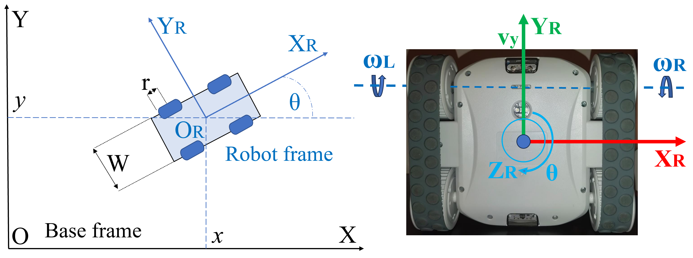
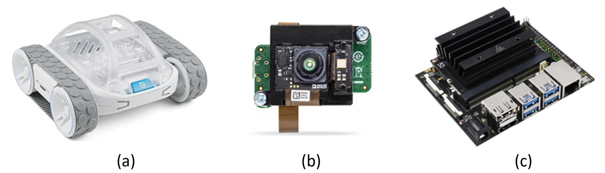
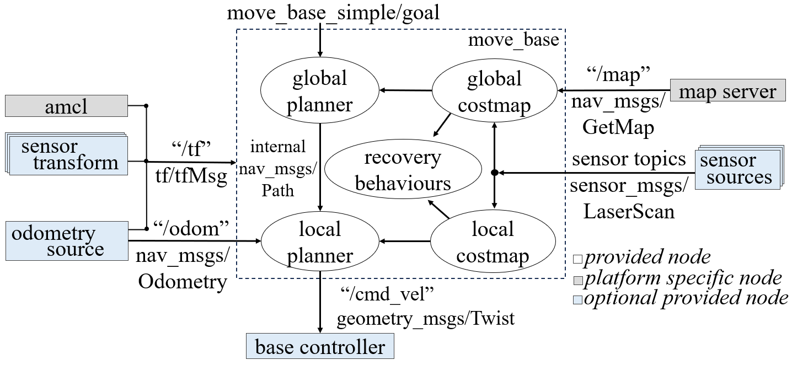

A. Robotic platform
The Sphero RVR, designed for educational and research purposes, provides an interactive and flexible platform for diverse mobile robotics projects, with a focus on simplicity in design and available software applications and resources [18]. Featuring a four-wheel, differential-driven design with continuous tracks for stability on uneven terrain.
The robot integrates onboard sensors designed to measure its internal states, including relative position or velocity, as well as vision-based sensors: IMU (Inertial Measurement Unit): measures robot orientation on each axis (pitch, roll and yaw); Accelerometer: X,Y,Z measurements; Velocity sensor: linear velocities on X,Y; Gyroscope: angular velocities of X,Y,Z; Encoder: angular velocities for the wheels.

Figure 2: Sphero RVR axis system and drive
Regarding the rover's control, a key aspect to discus is the differential drive. The Forward Kinematics can be described considering the simplified robot geometry from Figure 2. Consider the width of the robot W, the radius of the wheels r, and angular velocities of the right ωR and left ωL wheels. We then describe the relationship of the linear and angular velocities with respect to the robot frame:
ξ̇R = f(r, W, ωR, ωL) = [r/2, r/2; r/W, -r/W] · [ωR; ωL]
, derived from kinematic equations in [19].
The RVR robot's kinematics rely on differential driving, with the front wheels propelling and the rear wheels ensuring stability (discussed in Chapter I-A). In motion control, our focus is on inverse kinematics, converting wheel angular velocities into the robot's pose. Wheel velocities, controlled by applied voltages, serve as inputs, following the relationship derived from forward kinematics.
Figure 2 illustrates possible displacements and rotations around the robot's axis. Notably, movement along the X-axis necessitates a change in orientation θ, classifying the Sphero RVR as a non-holonomic robot capable of controlling movement on the Y-axis and rotation independently.
The differential drive control logic is implemented in the software platform, laying the groundwork for deploying packages, developing position control, and testing the final solution.
The application interface communicates with the hardware platform through a UART connection, enabling sensor reading and actuator manipulation. All functionalities are part of the Sphero RVR software development kit (SDK)1, available on the Sphero RVR git repository. Changes were made for communication with the Jetson Nano board via UART.
The SDK, based on event-driven programming, responds to events like velocity commands through handling functions. It includes controllers for the driving structure, such as heading and speed control or driving to a goal position.
B. Analog Devices ToF Module
The mobile robot platform is enhanced by integrating the ADI ToF module, known as AD-FXTOF1-EBZ. The module supports standalone applications, and integrates with libraries like OpenCV, ROS, and Point Cloud Library.2
For robot perception, the AD-FXTOF1-EBZ module extracts vision data, such as depth maps, infrared images, or 3D point clouds. This data serves two main purposes: mapping and localization, by extracting features and creating an occupancy grid and object detection, by matching online recorded data with stored mapping. The theoretical background is detailed in Chapter I-B, emphasizes its depth extraction capability.
The implementation uses the latest provided Linux image to flash the SD card that will boot on the Jetson Nano. A detailed documentation on the setup and software available for development at found on the guideline page.3 The ROS Noetic framework was later installed on the Kuiper Linux.
C. Proposed Solution. Software Integration
This research creates a robotic platform by integrating the Sphero RVR mobile robot with ADI ToF technology for intelligent perception, self-localization, mapping, and navigation within a specific environment.
The design includes both hardware component integration and software architecture. The main hardware components (Figure 3) used for this task include: (a) The Sphero RVR: including all on board sensors and actuators, (b) Nvidia Jetson Nano board: processing unit for cognition functions, (c) ADI ToF Module AD-FXTOF1-EBZ: integrated module capable of both data acquisition and processing, and an Uninterruptible Power Supply module for Jetson Nano.

Figure 3: Hardware components
The integration relies on the ROS framework to facilitate communication between different software platforms, ensuring simultaneous data flow from sensors, and transmitting processed control signals back to the robot's actuating system. The Sphero SDK facilitates sensor reading and actuator control, augmented by an ROS node for publishing relative position estimates and subscribing to data from the camera module. The navigation master computes global position estimates and guides the robot toward its target pose, dividing actions into local tasks like trajectory following, collision avoidance, and self-checking current location based on visual input.
The Sphero SDK, operating on an event-based model, facilitates sensor streaming and actuator control with observable robot states. In contrast, the ADI ToF software platform, supporting multiple platforms and languages, requires adaptation of Sphero packages into ROS for communication between navigation processes and the robot's sensors and actuators.
The camera node publishes data on multiple topics, including infrared images, 2D depth maps used in mapping and localization, 3D point clouds used in laser scanning and object identification, and camera information about the sensor's physical structure and calibration.
Odometry data, encapsulating pose and velocity estimates, is published by fusing IMU, gyroscope, and accelerometer readings. Software must run on a platform with a UART connection for Sphero's onboard sensors and a MIPI connector for ToF module data. Raspberry Pi and Nvidia Jetson Nano are suitable platforms, the latter providing the computational power and dedicated tools for additional AI image processing.

Figure 4: Navigation stack block diagram [1]
The ROS framework provides the Navigation Stack, a collection of packages for mobile robot navigation, handling localization, trajectory planning, and control signal generation. At its core, the navigation stack takes odometry and sensor data as inputs, producing velocity commands for robotic drive. Figure 4 illustrates the stack's main blocks and information flow. Inputs and outputs involve sensor sources, sensor transforms, odometry sources, and a base controller.
The light blue components in the figure indicate crucial input generators and output interpreters, comprising sensor sources for laser scan readings, sensor transforms for coordinate frame conversions, odometry sources for robot states, and a base controller for differential wheel commands. Grey blocks are optional, and white internal nodes manage sensor data, target positions, and control signals, ensuring proper ROS message structure within the paradigm. The navigation stack's internal nodes handle input data, implementing global and local mappings for planned trajectories and obstacle avoidance, all adhering to the ROS message typing.
D. Software architecture
This research makes significant contributions by introducing ROS support for the Sphero RVR and designing an architecture for the navigation process. This architecture integrates data acquisition, data fusion, mapping, localization, and control.
The robotic platforms can be characterized as distributed and modular system, with processing being run on the robot's onboard devices, as well as the camera module. All nodes are coordinated by a large navigation node implemented on the Jetson Nano board. The overall flow of data between the main processes can be observed in Figure 5.
Figure 5: Robotic platform block diagram
The robot node integrates the SDK driver and the onboard sensors into a single process. It publishes the fused position data for the navigation master and subscribes to the same master node for velocity commands, which are decoded into voltage signals for the motor wheels. The camera node uses ROS bindings to extract depth data form the integrated circuit and publishes them in the form of 2D LaserScan. Those scans are used for mapping as well as real-time localization.
Key elements in the navigation master node are the local and global planners. The global planner utilizes the static map, initial and target poses to generate a trajectory. In contrast, the local planner assesses viability along the planned path, generating stable velocity commands for the robot.
E. Mapping. Localization. Navigation
The II chapter introduced the Kalman filter for data fusion in localization. However, it struggles with non-Gaussian noise in position or depth sensor measurements.
Another commonly used estimator for localization is the particle filter, or Monte Carlo Localization. It relies on mapping grids and laser scanning data to estimate distance. With thousands of randomly distributed particles, the algorithm converges to determine the robot's position [20]. The main parameters we are interested in are: the belief (a measure of trust in a certain location) bel(xt) represented as a sequence of particles Xt = (x1, x2, ..xt) and the distribution by which we generate the particles at each step, p(x0).
Summarizing the steps above, according to [21]: An initial sampling of particles using uniform distribution, followed by weight assignment according to current laser sensor readings, resampling of particles according to the new distribution, moving the particle cloud according to the dead-reckoning model, and repeating the steps until the distribution centers around a best location estimate.
Real systems aim to optimize computational resources, leading to the adoption of Adaptive Monte Carlo Localization (AMCL) in navigation tasks. AMCL adapts to changing distributions by reducing particle generation as the distribution narrows. Research has explored particle filter localization parameters and their impact through consistent experiments. Results demonstrate the relationship between parameters and localization response [22]. In simulations, AMCL proves effective in localizing and navigating an Automated Guided Vehicle in both static and dynamic environments, ensuring successful goal achievement [23].
Figure 6: Indoor environment and incremental mapping
Initial development occurred in a ROS virtual environment, a platform that offers nodes for simulating environmental features, sensor streaming, and drive control. The stageros process encapsulates the 2D environment using a world file, specifying details about the simulated robot and mapped obstacles. A notable feature is the sensor simulation, where the node publishes data based on provided models.
Real environment mapping can be achieved through the gmapping ROS package, utilizing the high frame rates from camera sensors (30 fps). A reliable pose estimate from IMU and encoders allows the usage of the gmapping node in simulation environments. After creating an odometry source by fusing sensor data, the gmapping node subscribes to information from "/odom" and "/scan" topics, generating the map. Sequences of the mapping process can seen in Figure 6.
Figure 7: Pose estimates using the amcl particle filter
Continuous pose estimates are crucial for effective navigation, even with a constructed map. While the navigation node generates the path and initial velocity commands, lack of continuous updates can lead to control signal saturation or collisions. Relative robot position is determined through dead-reckoning, utilizing the odometer node to fuse sensor data into a nav_msgs/Odometry message. The extracted data includes IMU orientation, encoder-locator position estimates, gyroscope angular velocity, and accelerometer linear velocities. Rotation in inertial frames is addressed by remapping coordinates. Strategies like Adaptive Monte Carlo can enhance the relative positioning system, using the amcl package, as seen in Figure 7. This system employs odometry, map, and laser scans, with adjustments for potential delays. The estimated position converges as the robot explores, aligning with dead-reckoning effectiveness in small environments.